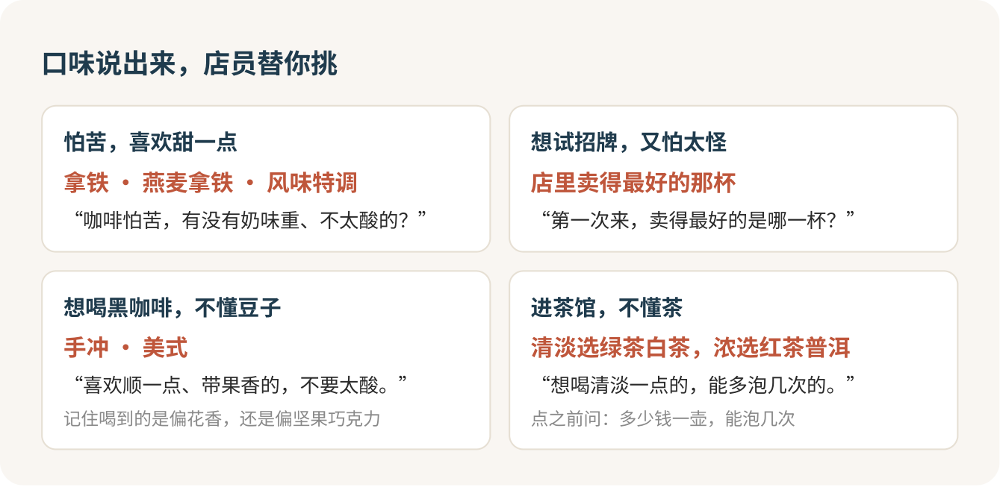

咖啡馆和茶馆：说出口味，比背名词有用
进精品咖啡馆也好，进茶馆也好，别背名词。把三件事告诉店员：要不要奶，怕不怕酸和苦，预算多少。这比你认得菜单上每个英文词、每座茶山都管用，店员每天干的就是把你的口味翻译成一杯东西。
菜单板前的那几秒
第一次进精品咖啡馆，最常见的场面是这样的：吧台上方写着 SOE、Dirty、澳白、手冲、冷萃，每个词都认识一半；后面有人在排队，店员抬头问“喝点什么”，于是脱口而出“一杯拿铁”，然后喝到一杯普普通通的拿铁。
拿铁没错。只是你多花了钱进这种店，本来能喝到更对胃口的东西。这就像第一次去一家很火的川菜馆，只点了一份蛋炒饭：吃饱了，那家店真正拿手的菜你一口没碰。
那几秒的慌，几乎人人都有。不用回家背术语，换一种开口方式就行。
用口味说话
怕苦、平时喝奶茶多的，这么说：
我咖啡怕苦，有没有奶味重、不太酸的？
想试试这家店的看家本领，又怕太怪，在独立店里这句最好使：
第一次来，你们卖得最好的是哪一杯？我能接受一点点酸。
招牌就是这家店最稳的那一杯，第一次进独立店，点招牌，错不了。
想喝黑咖啡、不懂豆子，就说方向和预算：“想试手冲，喜欢顺一点、带果香的，四十左右。”店员会从豆单里挑一两支给你讲。产地听不懂没关系，你只要记住喝到的是偏花香还是偏坚果巧克力，下次进任何一家店，说“上次那种偏坚果的”，就是一句行家话。今天不想要咖啡因，就问有没有不含咖啡的，在咖啡馆里喝可可、喝苏打坐一下午，一点都不奇怪。

名词只记最少的几个就够：意式浓缩是一小口很浓的咖啡，别当成“小杯美式”点；美式是浓缩兑水，不加奶不加糖；拿铁、澳白、卡布奇诺都是浓缩加奶，澳白奶少、咖啡味最重；Dirty 是冰牛奶上倒热浓缩，不搅，分层喝。手冲喝到酸味别以为坏了，那是豆子的风味。
精品咖啡值不值
连锁小店一杯二三十，胡同里的独立店一杯四五十，再来一块蛋糕就过一百了。差的那几十块，买的是座位、空间、店员跟你聊的那几分钟，还有那块蛋糕。
我的看法：每天续命的那杯，去连锁店，带自己的杯子还能便宜几块；独立店值得专门去，但第一次只点一杯招牌，别点甜品。精品店的甜品常常比饮品还贵，喝完觉得这家值，下次再来坐一下午。
还有几条现场经验。赶时间别点手冲，现点现冲，前面有几单就要多等几单。换燕麦奶、加一份浓缩，很多店要加钱，点之前问一句。周末下午座位紧，一杯饮品占着大桌开一下午电脑，有点不体贴，人多时主动挪到吧台位。
第一口就喝不惯，不喝就是了，口味不合不算出品问题。可以再点一杯方向相反的，跟店员说一句“刚才那杯对我有点酸，有没有更顺口的”。
进茶馆，先问它怎么收钱
茶馆和咖啡馆最大的不同在这里：同样挂着“茶馆”两个字，算钱的办法能差出十万八千里。北京有一块钱不到一碗的大碗茶，有一百起步的演出座位，有按人头收的茶位费，还有按小时算的自助包间。同样坐一下午，账单可以从一块钱到几百。
所以每进一家，第一句先问这个：
请问你们是按壶算、按人算，还是按时间算？
菜单一杯一杯标价、像奶茶店的，最省心，点多少付多少，只问一句续水收不收钱。卖票、有舞台的，像前门的老舍茶馆，按座位收票价，越靠前越贵，买票时问清含不含茶和茶点。安静讲究、一人一壶的茶舍，常收茶位费，按人头算，跟你喝多少没关系，四个人去就是四份起。小程序预约、扫码开门的自助包间，按小时收，下单前把超时怎么算、几点以后加价、有没有几小时起订看明白，离开时记得在小程序里点结束，别关门就走。
茶位费、包间费本身都合规，前提是事先写明。坐下前没人告诉你、价目表上也没有，结账时却冒出来，你可以指着它问“这是什么费用，价目表上在哪里”。商家不能收没标明的钱，这句话是你开口的底气。
点茶也一样，说方向
点茶不用懂山头和年份，说你想要的方向：
我们想喝清淡一点的，不太苦，四个人一起，能多泡几次的那种。
清淡的会被推荐绿茶、白茶、花茶，想浓一点、暖胃的，会是红茶、熟普、岩茶。点之前一定问清单位：“这款是多少钱一壶，一壶能泡几次？”别一不小心点了按克算的茶，结账吓一跳。
不会泡茶也没关系，有茶艺师的店直接说“我们不太会泡，能帮忙泡一下吗”，有的店要另收服务费，问清楚再请。
和朋友去，先把钱说在前头
几个人去茶馆，最尴尬的往往不是茶，是散场时谁付多少。按小时的包间、按人的茶位费，适合出发前就在群里说一句“那家按小时算，我先订两小时，到时候平摊”；按杯点的店，各点各的最省事。
很多茶馆靠卖茶叶、卖茶具赚钱，被推荐了，说一句“今天只喝茶，不买，谢谢”，不用解释，也不用觉得欠了谁。咖啡馆推你买豆子、办会员，一样回一句“今天先喝一杯”就好。
咖啡也好，茶也好，你是去享受一个下午的，不是去考试的。喝完第一口，给自己记一句：太酸、刚好还是太苦。下次进门，把这句话原样说给店员听。